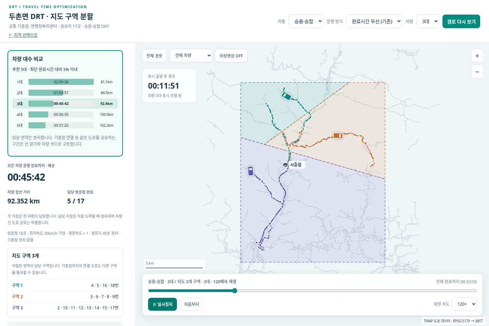
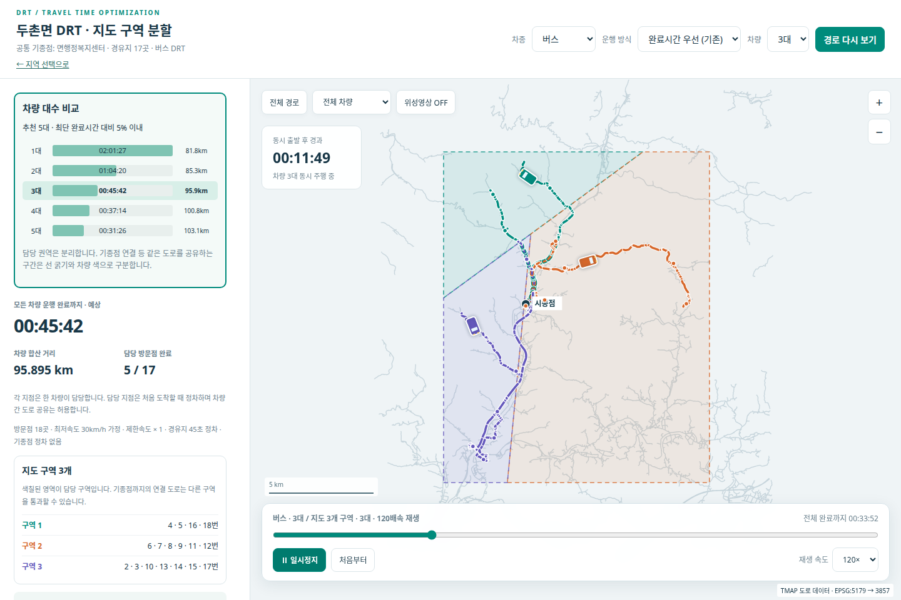

DRT 수요·경로 시뮬레이션
수요와 필수 방문지를 도로망에 연결하고, 차종·대수별 경로를 비교하는 공용 웹을 구현했습니다.
승용·승합 / 버스 · 1–5대 비교 · 실제 노선 15개의 격자 교차 검증
직접 실행한 화면과 영상
보존된 두촌면 실행 HTML에서 직접 녹화했습니다. 승용·승합과 버스 각각 3대가 동시 출발해 경유지를 방문하고 돌아오는 과정을 120배속으로 재생합니다.
승용·승합 DRT · 3대

버스 DRT · 3대

최저 30km/h 모의 조건입니다. 실차 주행 영상이 아니며, 아래 공유 도로 최소화 비교와는 목표가 다른 기존 완료시간 우선 시나리오를 보여줍니다. 차량 색상·위치·방문 완료 수와 화면의 모의 시각이 함께 변합니다.
화면 캡처·녹화: 2026.10.22 · 영상은 재생 버튼으로 시작하며 전체 화면으로 확대할 수 있습니다.
문제에서 결과까지
지도상 가까운 방문지라도 일방통행과 회전 연결 때문에 주행 경로가 달라집니다. 차종과 대수에 따라 달라지는 결과를 같은 기준으로 비교할 필요가 있었습니다.
도로 정책을 간선 탐색에 적용하고, 탐색 비용과 모의 주행시간을 분리했습니다. 수요 입력 → 방문지 확인 → 차종·대수 계산 → 지도 재생 → 결과 내보내기를 연결했습니다.
공용 웹에서 시나리오를 비교하고 단일 HTML로 결과를 공유할 수 있게 했습니다. 두촌면에는 차량 간 공유 도로 길이를 먼저 줄이는 별도 배정 모드를 추가했습니다.
수치와 조건을 함께 보기
RECORDED SCENARIO / 2026.10.16
공유 도로를 줄이면 무엇이 달라질까?
두촌면 17개 경유점의 저장된 계산 결과입니다. 차종·대수를 바꾸면 해당 시나리오의 비교값을 보여줍니다.
7.515km → 0.277km
공유 도로 감소가 모든 지표의 개선은 아닙니다. 승용·승합 4대의 최대 모의 종료시간은 약 36.6분에서 77.4분으로 늘었습니다. 종료시간 균등을 목표에서 제외한 결과입니다.
양 차종의 전체 비교표 · 단위 km
| 차종 | 대수 | 기존 공유 길이 | 중복 줄이기 |
|---|---|---|---|
| 승용·승합 | 2 | 1.805 | 0.130 |
| 승용·승합 | 3 | 5.316 | 0.130 |
| 승용·승합 | 4 | 7.515 | 0.277 |
| 승용·승합 | 5 | 8.834 | 2.228 |
| 버스 | 2 | 1.805 | 0.130 |
| 버스 | 3 | 5.932 | 0.130 |
| 버스 | 4 | 7.846 | 0.729 |
| 버스 | 5 | 8.893 | 2.228 |
공유 길이는 여러 차량이 통과하는 물리 구간의 고유 길이입니다. 반대 방향도 같은 구간으로 보고, 한 차량의 왕복은 차량 간 공유에서 제외합니다.
사용 데이터와 분석 단위
| 구분 | 내용 |
|---|---|
| 수요·방문지 | 진천 백곡·봉화 소천·하동 화개 등의 수요 표, 정류장·마을회관, 사용자가 확정한 방문지와 권역 |
| 도로망 | TMAP 도로·노드 속성, 일방통행, 기존 회전 연결, 차로 수와 도로 형상 |
| 공간 산출 | 확정 경로를 EPSG:5179의 500m·1km 격자와 교차. 정류장 사이 직선으로 대체하지 않음 |
| 분석 조건 | 최저 30km/h 모의 속도. 원본 제한속도와 구분하며, 승용·승합과 버스에 별도 탐색 정책 적용 |
구현 과정과 선택 이유
입력의 의미를 고정
원본 권역과 필수 시설을 보존하고, 누락된 필수 방문지와 잘못된 설정은 계산 전에 차단했습니다.
탐색 단계에서 도로 정책 적용
일방통행·회전 연결과 차종별 회피 비용을 탐색에 넣었습니다. 길이÷모의속도+정차시간으로 표시 시간을 따로 계산했습니다.
계산과 화면 갱신 분리
작업 ID 기반 진행 조회와 새로고침 복구, 지점·마커 재사용, 비교 결과의 묶음 조회를 구현했습니다.
최적화 목표를 명시
두촌면 중복 줄이기 모드는 공유 구간 길이 → 합산 거리 → 합산 모의시간 순으로 후보를 비교합니다. 종료시간 균등은 목표에 넣지 않았습니다.
보고자료까지 대조
봉화의 1–5대 확정 노선 15개를 PPT의 방문 순서·거리와 대조하고, 500m·1km 통과 셀 목록을 Excel로 제작했습니다.
검증 근거
- 2026.10.12: 소천면 15개 방문점 × 2차종 × 1–5대, 총 10시나리오에서 방문 누락·방향·회전·링크 상태 위반 0건을 확인했습니다.
- 2026.10.16: 공용 웹 관련 격리 검사 38개 통과. 실제 양 차종 계산, 390px 모바일, 새로고침 복구와 일시 오류 재시도를 점검했습니다.
- 지점 1,000개의 선택 변경 12회 시험에서 화면 함수 중앙값 32.6ms → 2.3ms. 전체 경로 계산시간의 개선율을 뜻하지 않습니다.
- 2026.10.22: 봉화 15개 노선의 격자 교차를 두 방식으로 대조했습니다. 미포함 경로 길이 0m, 500m 셀과 1km 상위 격자 일치, PPT 방문 순서·거리 일치를 확인했습니다.
PC의 도로·격자 검증 결과와 공용 서버의 2026.10.12·10.16 배포 검증, 10.22 결과 대조 기록. 공개 화면은 집계 비교만 제공하며 내부 서비스에 접속하지 않습니다.
해석과 적용의 범위
공유 도로를 줄이면 일부 차량의 종료시간이 길어질 수 있습니다. 아래 비교는 고정된 두촌면 시나리오의 탐색 결과이며 전역 최적해를 증명하지 않습니다.
30km/h 하한은 모의 조건입니다. 실차 속도, 제한속도 준수, 실제 신호 대기시간을 검증한 결과가 아닙니다.
도로 중심선과 차로 수로 차선별 궤적·차선 변경 제한을 확인할 수 없습니다. 확인되지 않은 규제를 추정해 적용하지 않았습니다.
봉화 격자 표는 기존 승용·승합 경로를 분석한 결과입니다. 이번 격자 분석에서 경로를 재최적화하거나 버스 결과로 일반화하지 않았습니다.